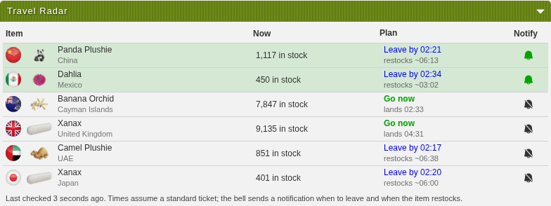

What the branch adds
The Travel Table shows what is in stock right now. Shelves abroad refill on each item's own rhythm: plushies stay empty about 15 minutes, flowers about an hour, Xanax about two. For slow sellers it hardly matters when you fly. For items that sell out within minutes of a refill, you need to land as the refill happens, and flights last 24 minutes or more. The radar watches the feed in the background, learns each rhythm, and works backwards from the next restock.
Leave-now notification
For items you watch: fly by this time and you land at the early edge of the predicted restock window. It accounts for your ticket type.
Restocked notification
When a watched item comes back and should still be there when you land. It stays quiet when it would sell out mid-flight.
Travel Radar panel
On the Travel Agency page: every predictable item with its plan, and a bell to watch it. Off by default.

Does the timing hold?
The logic comes from a personal Android app I've used for a month. I ported it to TypeScript and replayed the same 48 hours of YATA history (26–28 September) through both versions. All 15 counts the Kotlin tests print came out identical in the port.
Landing at the early edge of the predicted window
| Item | Restock cycles | Stock still there |
|---|---|---|
| Panda Plushie China | 120 | 118 (98%) |
| Camel Plushie UAE | 121 | 120 (99%) |
| Dahlia Mexico | 23 | 23 (100%) |
| Banana Orchid Cayman Islands | 23 | 23 (100%) |
Where timing matters most: Xanax in Japan is gone within minutes of each restock. Following the radar's plan (fly so you land at the window, wait until its late edge) found stock on 456 of 514 plans. Flying at the same moment without a plan found it on 125.
Tonight, a month later
To check the rhythms haven't changed, I recorded both feeds once a minute for 42 minutes (23:20–00:02 TCT, 2026-10-28). Prometheus answered 43 of 43 times; YATA 18 of 43, with 502s and timeouts the rest. The radar uses whichever service the user prefers and falls back like the Travel Table does.
| Seeded item | Seed: median empty minutes | Tonight: empty minutes seen |
|---|---|---|
| Panda Plushie China | 15.2 | none completed yet |
| Camel Plushie UAE | 15.2 | none completed yet |
| Dahlia Mexico | 59.5 | none completed yet |
| Banana Orchid Cayman Islands | 56.9 | none completed yet |
| Xanax United Kingdom | 122.2 | none completed yet |
| Xanax Japan | 116.8 | none completed yet |
No predictable item has completed a sell-out and restock at the extension's pace yet; this section fills in as the recording runs.
Prometheus also publishes its own nextRestock. It is still mostly stale, as in September (46 of 60 then): 1,094 of the 1,591 values it published tonight (69%) were already in the past, and all 40 current ones sit on the old :00/:15/:30/:45 grid. For the 8 restocks with one published at least 10 minutes ahead, it was off by a median 91 minutes. The radar doesn't use it.
How it fits TornTools
- Off by default
- One switch under Travel (
settings.pages.travel.radar). It turns on the background learning and the panel. Notifications sit with the other types (settings.notifications.types.travelRadar) and only cover items you watch. - Feed use
- One
fetchTravelData()call every 5 minutes while it's on and the browser is open, through the user's own service priorities. No new Torn API calls: it reads the existing userdata for status (only pings when you're Okay) and ticket type. - Where the code is
features/travel-radar/radar-core.ts(pure logic, no I/O), its tests, the panel feature, andbackground/updates/travel-radar.ts, called fromtimedUpdateslike the NPC alerts. Existing files gain 36 lines: settings, the storage key, the switches and the feature registration.- Storage
- One key,
travelRadar: about 50 KB for the ~230 items the feed lists. - Checks run
- 288 tests pass (20 new), plus types, Svelte check, Oxlint and Oxfmt.
wxt buildfor Chrome works, and the extension loads in Chromium: the background read the live feed and the panel rendered with no console errors.
What I'd like to know from you
- Polling. Is one background read every 5 minutes acceptable for users who turn this on? Reading every minute catches far more of the fast items' restocks: in the app's replay it confirmed about 83% of them, against about 33% at 5 minutes. But it's five times the load on Prometheus and YATA.
- Placement. A separate panel, or columns in the Travel Table (next restock, leave by, a bell)?
- Shape. Seeds for six items ship in code so it predicts from the first check. Fine, or learn from scratch? And one PR, or the core and background first, then the panel?
Not tested yet
- The panel on the real Travel Agency page with a logged-in session (above: the built extension on a stand-in page, with live data).
- Desktop notifications in a real session with an API key. The ping rules are unit tested; the notification goes through TornTools' existing
dispatchNotification. - The Firefox build.
- Profit. You choose what to watch; the radar doesn't rank by money or capacity yet.